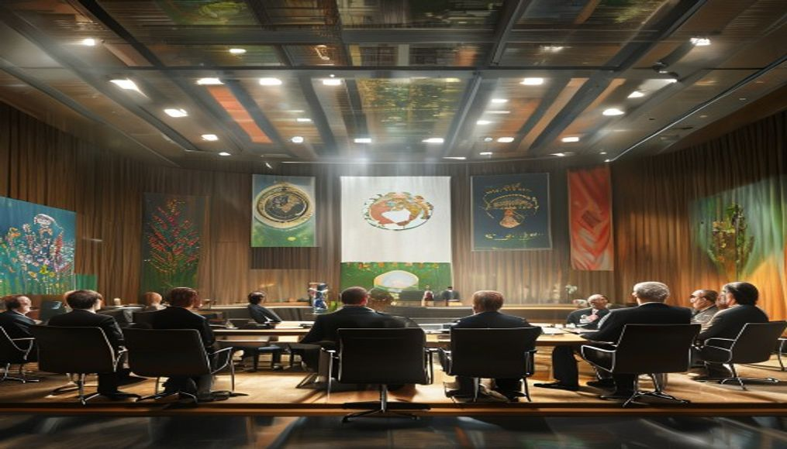
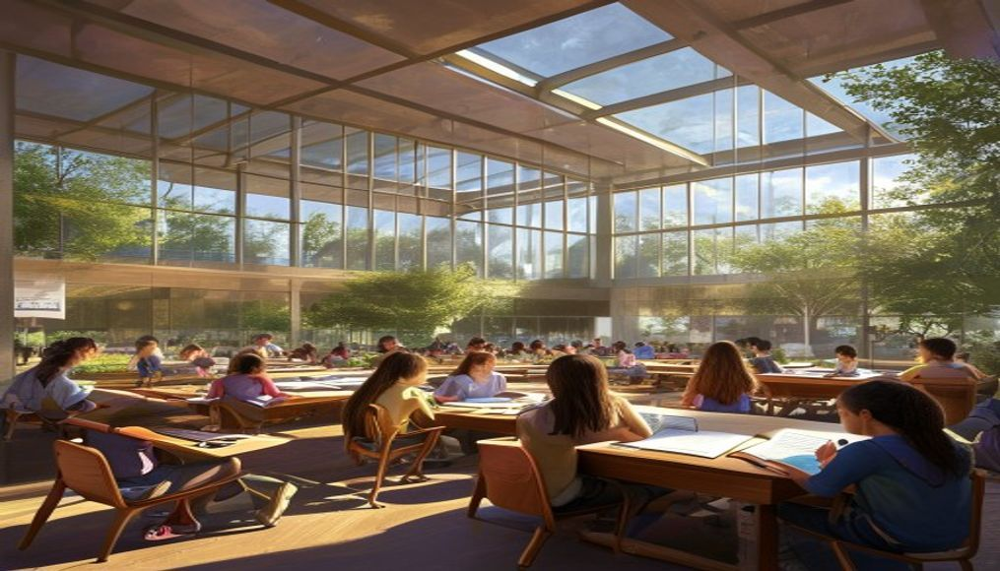
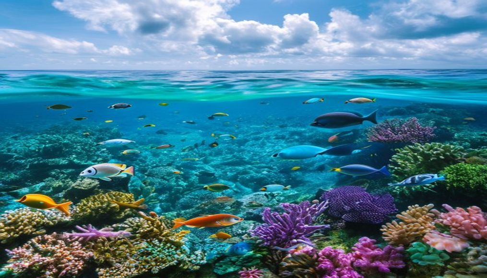
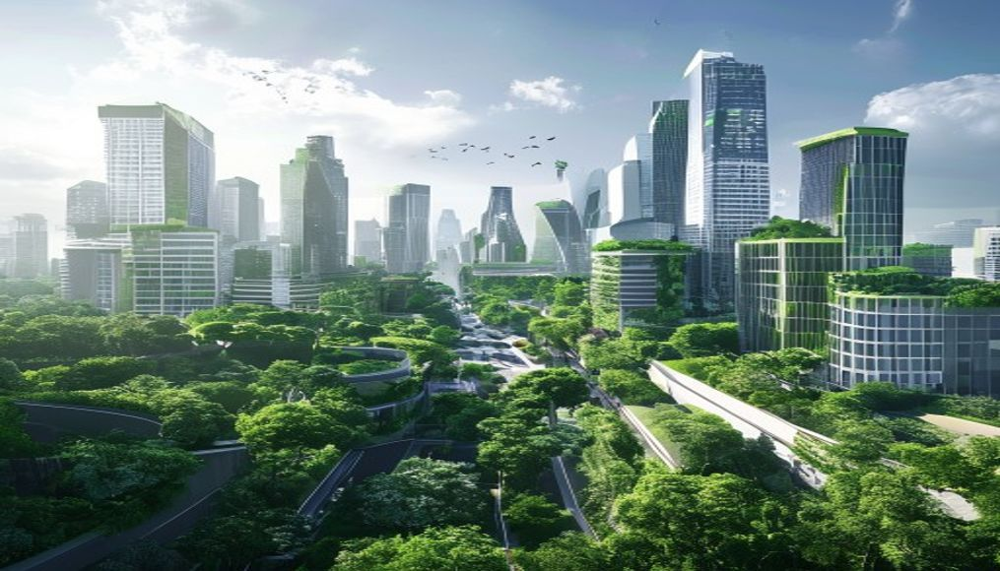

美伊谈判进入关键阶段 双方代表团抵达日内瓦
2026年04月27日，美国与伊朗两国代表团抵达日内瓦，准备就核问题及霍尔木兹海峡安全议题展开新一轮谈判。双方此前在多哈举行的预备会议为本次正式谈判奠定了基础。国际社会普遍呼吁双方保持克制，通过对话解决分歧。欧盟调解方表示，会谈氛围较上次更为积极，各方对达成阶段性协议持谨慎乐观态度。
2026年04月27日 · 全球热点速递
← 返回今日新闻2026年04月27日，美国与伊朗两国代表团抵达日内瓦，准备就核问题及霍尔木兹海峡安全议题展开新一轮谈判。双方此前在多哈举行的预备会议为本次正式谈判奠定了基础。国际社会普遍呼吁双方保持克制，通过对话解决分歧。欧盟调解方表示，会谈氛围较上次更为积极，各方对达成阶段性协议持谨慎乐观态度。

2026年04月27日，联合国气候峰会在纽约闭幕。会上，包括中国、美国、欧盟在内的主要经济体承诺到2035年将碳排放量在2020年基础上减少百分之四十五。峰会还宣布成立全球气候基金，首期注资五百亿美元用于支持发展中国家清洁能源转型。环保组织对峰会成果表示欢迎，同时呼吁各国加快落实具体行动计划。
2026年04月27日，中国国务院副总理与美国财政部长在华盛顿举行会谈，就双边经贸关系、供应链安全及金融监管等议题深入交换意见。双方同意建立定期沟通机制，每季度举行一次高层经贸对话。会谈结束后发表的联合声明称，两国将共同努力维护全球贸易秩序稳定，推动世界经济复苏和发展。
2026年04月27日，欧盟委员会发布人工智能安全与伦理白皮书，提出建立全球统一的AI监管标准。白皮书涵盖AI系统透明度、数据隐私、算法公平性等关键议题。美国、英国、日本等国表示将参与相关国际规则的制定。科技业界对此反应不一，部分企业支持统一标准以降低合规成本，也有声音担忧过度监管可能抑制创新。

2026年04月27日，世界卫生组织发布全球疫苗分配公平性年度报告。报告显示，新冠疫情后全球疫苗生产能力大幅提升，但低收入国家获得关键疫苗的比例仍显著偏低。世卫组织呼吁建立全球疫苗战略储备机制，确保下一次大流行病暴发时能够公平快速地分配疫苗。多国政府承诺将增加对全球卫生体系的资金支持。
2026年04月27日，来自中国、美国和德国的三所研究机构同日宣布在量子计算领域取得突破性进展。三支团队分别成功运行超过一千比特的量子处理器，错误率控制在可实用范围内。这一进展被视为量子计算从实验室走向商业应用的重要里程碑。金融、医药和材料科学等领域的企业已开始评估量子计算的实际应用场景。
2026年04月27日，国际能源署发布年度报告称，2025年全球清洁能源投资总额首次突破三万亿美元，其中太阳能和储能行业占据主导地位。中国、美国和欧洲的海上风电项目加速推进，东南亚地区的太阳能装机容量增长最为迅猛。报告指出，清洁能源成本的持续下降正在重塑全球能源格局，传统化石燃料行业面临更大转型压力。
2026年04月27日，国际劳工组织发布年度全球就业形势报告。数据显示，全球失业率在过去一年有所下降，但人工智能和自动化技术对传统就业岗位的替代效应日益显著。报告建议各国政府加强职业培训体系建设，帮助劳动者适应新的就业市场需求。数字经济、绿色经济和医疗健康领域成为吸纳就业的主要增长点。
2026年04月27日，联合国安理会应阿拉伯国家联盟请求就中东地区持续紧张局势召开紧急会议。中东多国代表在会议上发言，呼吁冲突各方立即停火并恢复谈判。联合国秘书长在发言中警告说，地区冲突升级将带来严重人道主义后果，敦促有关国家保持最大克制。与会各方的立场分歧仍然明显，安理会未能就决议草案达成一致。
2026年04月27日，为期三天的全球数字经济论坛在新加坡拉开帷幕。来自一百多个国家和地区的政府官员、科技企业高管和学术专家参会。本届论坛重点讨论跨境数据流动、数字货币监管、人工智能治理等议题。中国、印度和东盟国家代表在数据本地化问题上表达了各自立场，论坛期间宣布启动数字经济伙伴关系协定新一轮谈判。
2026年04月27日，搭载来自中国、美国、俄罗斯、日本、欧洲和印度的六名宇航员的载人飞船成功与国际空间站对接。新宇航员将在空间站开展为期六个月的科学实验和技术测试任务，涵盖微重力物理、生物医学和地球观测等领域。这是国际空间站历史上首次迎来六国同时在轨执行任务的宇航员团队，标志着国际航天合作持续深化。
2026年04月27日，联合国粮农组织在罗马总部召开全球粮食安全高级别会议。会议警告说，极端气候事件频发和国际物流成本上升正在加剧全球粮食供应链的不稳定性。与会四十多个国家承诺在未来五年内向发展中国家农业项目追加总计二百亿美元投资，重点支持耐旱作物研发和小型农户能力建设。会议还呼吁建立全球粮食储备信息共享机制。
2026年04月27日，为期两天的国际反恐合作峰会在利雅得闭幕。来自五十多个国家和地区的安全部门负责人签署了一份新的反恐安全协议，同意在情报共享、边境管控和网络反恐三个领域加强合作。协议建立了二十四小时跨国快速响应机制，并首次将人工智能监控技术纳入反恐工具清单。人权组织对部分条款表达关切，呼吁确保技术手段的合法使用。

2026年04月27日，在联合国环境规划署协调下，全球海洋保护行动计划正式启动。包括美国、中国、日本和欧盟主要成员国在内的二十个国家承诺在十年内将本国管辖海域的百分之三十划设为海洋保护区。该计划还将在未来五年内投入一百亿美元用于海洋垃圾治理、珊瑚礁修复和深海生态系统研究。环保组织对计划的雄心表示认可，同时呼吁加快实施进度。
2026年04月27日，联合国教科文组织宣布以"文明对话与和平发展"为主题的国际文化交流年活动在全球一百五十多个国家同步启动。开幕式庆典在北京、巴黎、开罗和墨西哥城四城联线举行，展示了各国传统艺术表演和文化遗产图片展。今年将在全球范围内举办超过三千场文化交流活动，预计吸引数千万民众参与。
2026年04月27日，全球水资源管理大会在阿姆斯特丹闭幕。会议重点讨论了跨境河流管理、地下水保护和海水淡化技术推广等议题。与会期间，包括湄公河流域国家在内的多个区域组织签署了跨境水资源共享协议，同意建立联合监测和纠纷调解机制。大会报告指出，全球约四十亿人口正面临水资源短缺问题，呼吁各国将水安全纳入国家战略优先事项。
2026年04月27日，经济合作与发展组织与技术领域主要企业联合发布了人工智能伦理准则实施指南。指南为企业如何在不同行业部署人工智能系统提供了详细的操作指引，涵盖算法公平性评估、数据质量管理、人机协作安全等十二个方面。多家科技巨头表示将按照指南要求对旗下AI产品进行合规审查。学术界和民间组织也参与了指南的制定过程。

2026年04月27日，全球城市可持续发展联盟正式公布首批五十个成员城市名单，包括北京、上海、纽约、伦敦、东京、悉尼等知名城市。该联盟旨在通过城市间的经验交流和技术合作加速实现联合国可持续发展目标。入选城市将在城市绿化、低碳交通、智慧能源管理等领域开展联合试点项目，并定期发布可持续发展进展评估报告。
2026年04月27日，年度全球青年创新创业大赛总决赛在迪拜落幕。本届大赛共收到来自一百八十个国家和地区的超过十万个项目报名，涵盖清洁能源、医疗健康、数字教育和农业技术等领域。经过激烈角逐，来自中国、印度和新加坡的三个团队分别获得可再生能源、健康科技和金融科技三个赛道的冠军。联合国开发计划署宣布将为获奖项目提供后续孵化支持。
2026年04月27日，由二十五个国家参与的国际可再生能源合作计划在利雅得发布未来十年发展路线图。路线图提出到2035年全球绿氢产能扩大二十倍的目标，并明确了电解槽技术改进和输氢基础设施建设的关键时间节点。计划还设立了总规模五百亿美元的绿色融资平台，为发展中国家可再生能源项目提供低息贷款支持。